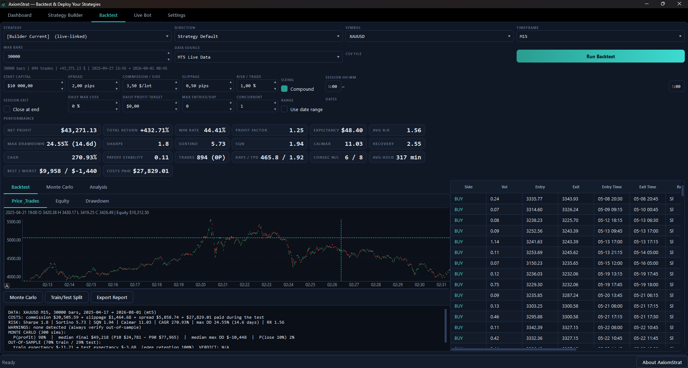
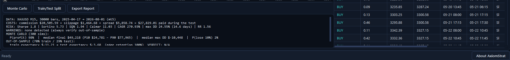
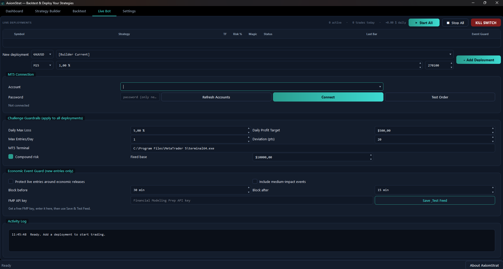
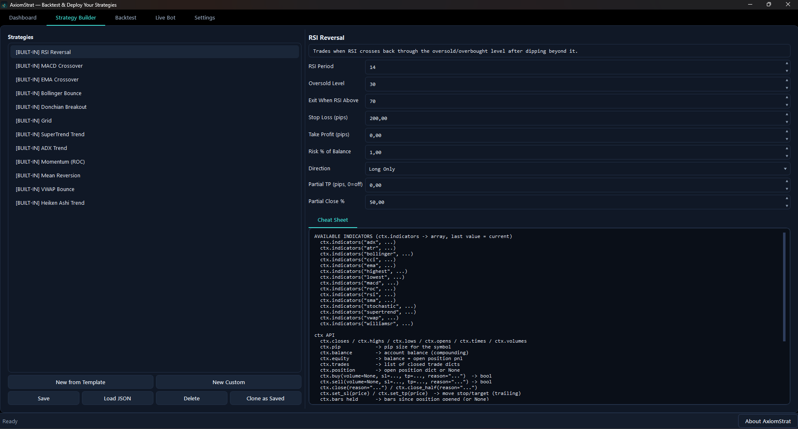
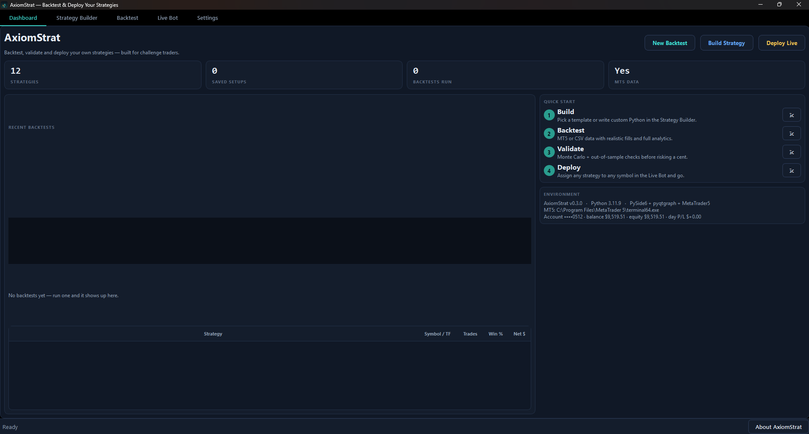
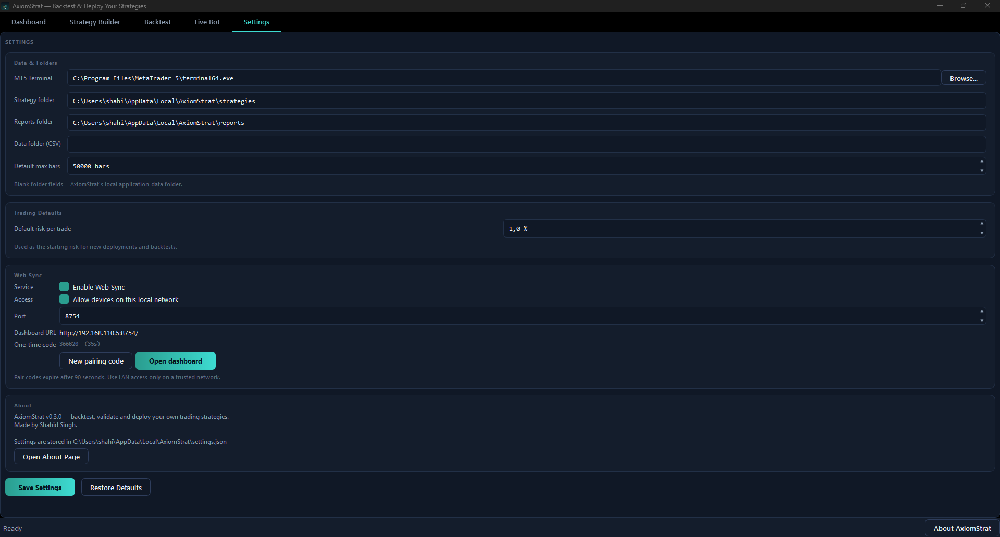

Real screenshots of AxiomStrat running — not mockups. Every number on these screens was produced by the verified engine.

The full results view: price with entry/exit markers, equity curve with peak and drawdown, P/L by trade, monthly breakdown, P/L distribution — plus 18 headline metrics and every single trade with its entry/exit prices, costs, and exit reason.

50 resampled equity paths with P10–P90 band, probability of profit, median final balance, and drawdown risk — so you know the odds before you risk a cent. The trust report ties it all together with the train/test split.

Deploy any strategy to MT5 in one click — per-bot start/stop, risk sizing, session windows, daily drawdown limits, and a live status feed. Start all, stop all, or babysit one bot from the Web Sync page on your phone.

Twelve built-in templates you can tweak — RSI Reversal, EMA Cross, MACD, Grid, Mean Reversion — or write your own logic. Every parameter is exposed; every template is a starting point, not a cage.

Your session at a glance: latest backtest results, live deployment status, equity sparkline, and one-click jumps to every tool.

Point at your MT5 terminal, choose where strategies and reports live, set trading defaults, manage your signed license key and configure the Economic Event Guard — everything persists locally, nothing leaves your machine.
Every backtest in this app was run through the independent verification harness — each trade replayed from raw prices, equity matched to the cent, costs itemised. That's not a marketing claim; it's a test suite. See how we verified it →